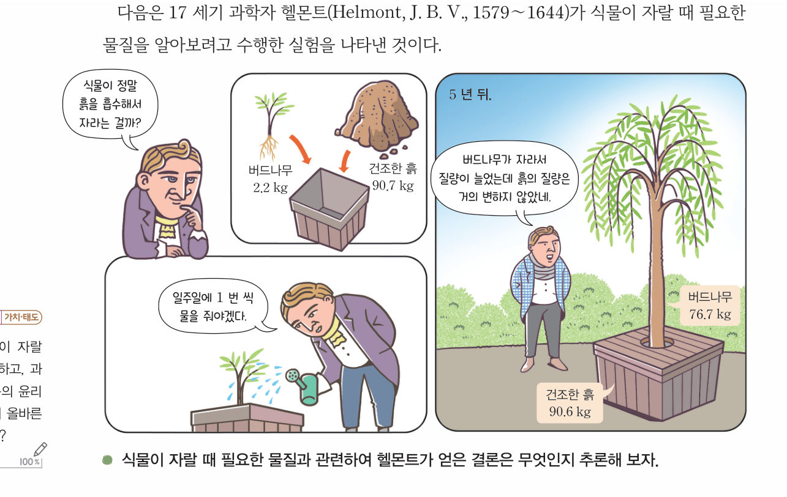
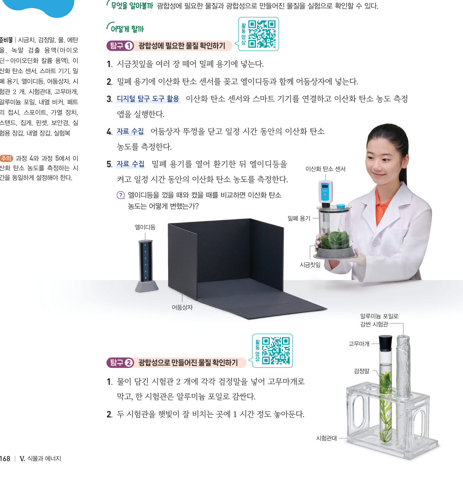
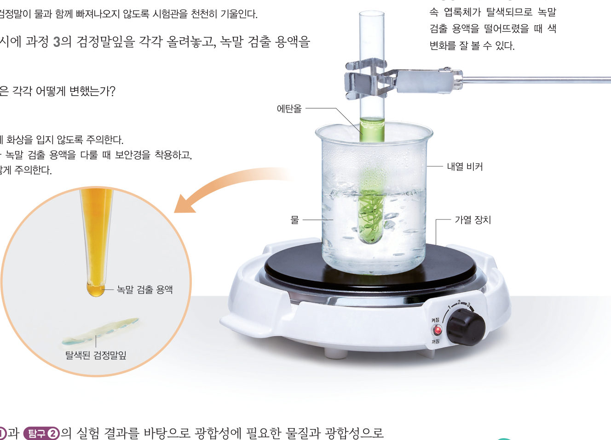

“너는 밥 안 먹어?” “나는 … ….” 식물은 어떻게 양분을 만들 수 있을까? 헬몬트의 5 년 실험을 빨리 감아 보고, 가상 이산화 탄소 센서와 검정말 녹말 실험으로 광합성에 필요한 물질과 만들어진 물질을 확인해 보자.
🎯 이 단원을 배우면 — 광합성 과정을 이해하고, 광합성에 필요한 물질과 광합성으로 만들어진 물질을 확인할 수 있다.
첫 번째 블록스마트팜에서 식물이 광합성을 활발하게 하려면 환경을 어떻게 조절해야 할까? 165쪽
“흐린 날에 스마트팜에서는 엘이디(LED)등으로 식물에 빛을 비출 수 있어.” “스마트팜에서는 환경을 조절하여 과일이나 채소가 잘 자랄 수 있게 해 주지.” 이 단원의 힌트 조각을 모으면 광합성 과정과 광합성에 영향을 미치는 환경요인을 알아내어 첫 번째 블록 질문에 답할 수 있다.
이 단원과 관련해 이미 알고 있는 것에 표시해 보자.
해 보기 · 자료 변환·비교·분석·해석하기식물이 자랄 때 필요한 물질 추론하기 166쪽
식물은 뿌리가 뽑히거나 썩으면 살기 어렵고, 기름진 토양에서 잘 자란다. 이러한 사실을 바탕으로 17 세기까지 사람들은 식물이 뿌리로 흙을 흡수하여 자란다고 생각했다. 17 세기 과학자 헬몬트는 식물이 자랄 때 필요한 물질을 알아보려고 실험을 했다.

166쪽헬몬트의 실험 — 버드나무 2.2 kg, 건조한 흙 90.7 kg에서 5 년 뒤 버드나무 76.7 kg, 건조한 흙 90.6 kg
헬몬트의 5 년시간을 흐르게 해 보자
15 년 동안 버드나무의 질량은 약 kg 늘었지만, 흙의 질량은 약 kg밖에 줄지 않았다. 헬몬트는 버드나무가 을 흡수하여 자랐다고 결론지었다.
💬헬몬트의 결론에서 부족한 점은 무엇일지, 과학자의 올바른 연구 태도와 관련하여 이야기해 보자.
교과서식물의 광합성은 어떤 과정일까? 167쪽
헬몬트의 탐구 결과 식물이 자라면서 뿌리로 물을 흡수한다는 것이 알려졌다. 또 여러 과학자의 탐구로 식물은 빛에너지를 이용하여 양분을 만드는 광합성을 하고, 광합성에는 이산화 탄소와 물이 사용된다는 것이 밝혀졌다.
그림 5-1과 같이 광합성은 식물 세포의 엽록체에서 이산화 탄소와 물을 원료로 빛에너지를 이용하여 포도당을 만드는 과정이고, 이 과정에서 산소가 발생한다. 대부분의 식물은 포도당을 녹말로 바꾸어 잎에 저장한다. 포도당이나 녹말과 같은 양분은 식물이 생명활동을 하는 데 필요한 에너지원으로 이용된다.
그림 5-1식물의 잎에서 일어나는 광합성
1광합성 식을 화학식으로 완성해 보자. 이산화 탄소( ) + 물( ) —빛에너지→ 포도당( ) + 산소( )
탐구 · 디지털 탐구 도구 활용하기광합성에 필요한 물질과 산물 확인하는 실험하기 168~169쪽

168쪽밀폐 용기 · 이산화 탄소 센서 · 엘이디등 · 어둠상자 / 검정말 시험관
Ⓐ 시금칫잎을 밀폐 용기에 넣고 이산화 탄소 센서를 꽂아 엘이디등과 함께 어둠상자에 넣는다. 엘이디등을 끄고 일정 시간 동안 이산화 탄소 농도를 측정한 뒤, 환기하고 엘이디등을 켜서 같은 시간 동안 측정한다.
Ⓑ 물이 담긴 시험관 2 개에 검정말을 넣고 한 시험관은 알루미늄 포일로 감싸 햇빛에 1 시간 놓아둔다. 검정말잎을 ●에탄올에 넣어 물중탕한 뒤 녹말 검출 용액(아이오딘-아이오딘화 칼륨 용액)을 떨어뜨린다.
⚠️ 가열 장치에 화상을 입지 않도록 주의하고, 에탄올이나 녹말 검출 용액을 다룰 때 보안경을 착용한다.
Ⓐ 가상 이산화 탄소 센서엘이디등 끄기 · 켜기
1엘이디등을 껐을 때 이산화 탄소 농도는 하고, 켰을 때는 한다. 빛이 있을 때 시금칫잎은 이산화 탄소를 한다.
Ⓑ 가상 검정말 실험순서대로 진행해 보자
검정말 시험관 2 개를 준비했어요. 오른쪽 시험관은 알루미늄 포일로 감쌌어요.
2녹말 검출 용액을 떨어뜨리면 빛을 받은 검정말잎은 , 알루미늄 포일로 감싼 검정말잎은 이다. 따라서 광합성으로 이 만들어졌음을 알 수 있다.
●에탄올에 넣어 물중탕을 하는 까닭 검정말잎 세포 속 엽록체가 탈색되므로 녹말 검출 용액을 떨어뜨렸을 때 색 변화를 잘 볼 수 있다.

169쪽에탄올 물중탕과 녹말 검출
더 해 보기 · 광합성으로 발생하는 기체 확인하기
탐구 Ⓐ에서 이산화 탄소 센서 대신 산소 센서를 사용하여 광합성이 일어날 때 산소 농도를 측정해 보자. 측정을 시작했을 때와 끝냈을 때의 산소 농도를 비교해 보자.
🧩 첫 번째 블록 · 힌트 조각 1 (169쪽)
식물은 빛에너지, 이산화 탄소, 물을 이용하여 포도당을 만들고, 이 과정에서 ( )가 발생한다.
스스로 확인하기166쪽 학습 목표를 달성했는지 확인해 보자 169쪽
1개념 확인 광합성은 식물이 ( )와 물을 원료로 빛에너지를 이용하여 포도당을 만드는 과정이고, 이 과정에서 ( )가 발생한다.
2사고력 숲을 보전하는 것이 대기에 영향을 미치는 까닭을 광합성과 관련지어 설명해 보자.
5분 테스트양분을 만드는 광합성
1동물은 먹이를 먹어 에너지를 얻지만, 식물은 을 하여 양분을 스스로 만든다. 광합성은 식물이 를 이용하여 이산화 탄소와 물을 원료로 양분을 만드는 과정이다.
✔옳으면 O, 옳지 않으면 X
② 광합성에는 이산화 탄소가 필요하다.
③ 식물은 뿌리로 흙을 흡수하여 자란다.
④ 광합성 결과 녹말이 만들어진다.
5광합성에 필요한 물질은 와 물이다. 광합성을 하면 양분과 함께 가 발생한다. 처음 만들어지는 양분인 은 곧 녹말로 바뀌어 잎에 저장된다. 양분은 생명활동에 필요한 으로 사용된다. 광합성은 식물 세포의 에서 일어난다. ⑩ 아이오딘-아이오딘화 칼륨 용액으로 확인할 수 있는 양분은
스스로 정리하기양분을 만드는 광합성 174쪽
1양분을 만드는 광합성
⑴ 광합성: 식물이 을/를 이용하여 이산화 탄소와 물을 원료로 양분을 만드는 과정 ⑵ 광합성에 필요한 물질: , 물 ⑶ 처음 만들어진 양분인 포도당은 곧 로 바뀌어 저장되고, 산소가 발생한다.
평가 기준
스스로 평가
과정·기능 디지털 탐구 도구로 광합성에 필요한 물질과 만들어진 물질을 확인했는가?
가치·태도 과학적 근거에 기반하여 탐구 결과를 해석하며 호기심이 생겼는가?
제출학생 정보 · 제출하기
모든 활동을 마친 뒤 제출하면 전체가 한 번에 채점되고 피드백이 나타나요. 답안은 선생님 스프레드시트(중2 탭)에 기록돼요.